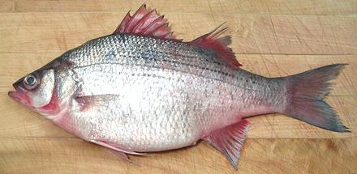

White Bass

[Freshwater Bass; Morone chrysops]
Native to the rivers of North America, this bass looks a lot like the
Striped Bass, but it inhabits only fresh water and does not venture to
sea. These fish can grow to almost 18 inches and 6-3/4 pounds but the
one in the photo was 13-1/4 inches and weighed 1 pound 6 ounces, a little
larger than the average market size. This fish is now farmed on an
experimental basis and is not listed as threatened.
More on Bass Family.
This fish can be filleted and pan fried, pan fried whole or pan
dressed, steamed, baked, grilled, or poached whole. It is not a good
fish for soups or stews as it falls apart with wet cooking. When steamed
with the usual slashes, skin shrink opens the slashes some but not so
much as to be unattractive. The flesh is off white with a thin somewhat
darker layer just under the skin. It has a pleasant flavor by any
means of cooking.
Buying:
This fish can often be found in Asian markets
here in Los Angeles, sometimes for as little as 2010 US $1.29 / pound.
Of course that's a "no cut, no clean" price, so it's all up to the
purchaser. Though it is easy to confuse this fish with the saltwater
Striped Bass, getting the wrong
one isn't a big problem as they are much alike.
Prep:
The scales on this fish are medium size and scrape
off quite easily with only moderate flying about. There are no particular
problems gutting this fish, and the gills pull out fairly easily, but
you may want to use kitchen shears to cut them loose at the bottom end.
This is an easy fish to fillet. When you get to the rib cage just cut the
ribs from the backbone with kitchen shears and pull them from the fillet
with long nose pliers - they pull fairly easily.
Skin:
The skin has modest shrink, but enough to curl a
fillet in a frying pan. If you press the fillet back flat with your turner
the skin quickly looses its grip and the fillet will continue to fry flat.
Fillets can be skinned quite easily with the long knife and cutting board
Method, but it does not have a strong or
unpleasant flavor, so can be left on for most forms of cooking.
Yield:
A 1 pound 5-5/8 ounce fish yielded 9-7/8 ounces of
skin-on fillet (46%) and 8-1/2 ounces skin off (39%).
Stock:
The head, bones and fins make a pleasant usable
fish stock with moderate oil. Separate the oil using your gravy separator
before use. For details See
Method.
sf_basswhz 100421 - www.clovegarden.com
©Andrew Grygus - agryg@clovegarden.com - Photos
on this page not otherwise credited © cg1
- Linking to and non-commercial use of this page permitted